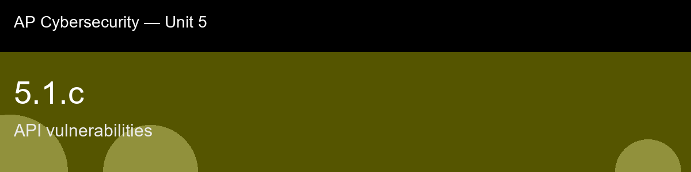

5.1.c, API vulnerabilities
Before class today. An API (application programming interface) is the set of URLs, request formats, and response
formats a client application uses to talk to a server. Modern apps, mobile, web, IoT, are almost
entirely built on APIs: the mobile banking app calls GET /api/accounts/482 to show your balance,
a shopping site calls GET /api/orders/9931 to show your order status.
The intuition to hold onto: Hold onto this distinction walking in: authentication answers "who are you," authorization answers "what are you allowed to touch", and BOLA exists in the gap between an API asking the first question and forgetting to ask the second. A valid login token is not a blank check; it's proof of identity, and every single request still needs its own separate check of whether this identity is allowed to touch this specific object. That's a genuinely different mental habit than the input-sanitization mindset from 5.1.a/b, here the data going in is perfectly well-formed, the attacker just changed a number in a URL, so no amount of escaping or query parameterization would have caught it.
A myth worth busting before we start: "If the request needs a valid login token, it's secure." → Authentication only proves identity; BOLA happens precisely when authorization (per-object permission) is never checked afterward.
Today's goal: Explain how broken object-level authorization (BOLA/IDOR) and excessive-data-exposure flaws let an attacker abuse an application programming interface (API) to access data or objects they should not be able to reach, and can identify the missing check that causes it.
Handout: pre-lecture-handout.docx.

## 5.1.c, API vulnerabilities
**Before class today.** An **API (application programming interface)** is the set of URLs, request formats, and response
formats a client application uses to talk to a server. Modern apps, mobile, web, IoT, are almost
entirely built on APIs: the mobile banking app calls `GET /api/accounts/482` to show your balance,
a shopping site calls `GET /api/orders/9931` to show your order status.
**The intuition to hold onto:** Hold onto this distinction walking in: authentication answers "who are you," authorization answers "what are you allowed to touch", and BOLA exists in the gap between an API asking the first question and forgetting to ask the second. A valid login token is not a blank check; it's proof of identity, and every single request still needs its own separate check of whether *this* identity is allowed to touch *this* specific object. That's a genuinely different mental habit than the input-sanitization mindset from 5.1.a/b, here the data going in is perfectly well-formed, the attacker just changed a number in a URL, so no amount of escaping or query parameterization would have caught it.
**A myth worth busting before we start:** "If the request needs a valid login token, it's secure." → Authentication only proves identity; BOLA happens precisely when authorization (per-object permission) is never checked afterward.
**Today's goal:** Explain how broken object-level authorization (BOLA/IDOR) and excessive-data-exposure flaws let an attacker abuse an application programming interface (API) to access data or objects they should not be able to reach, and can identify the missing check that causes it.
Handout: `pre-lecture-handout.docx`.